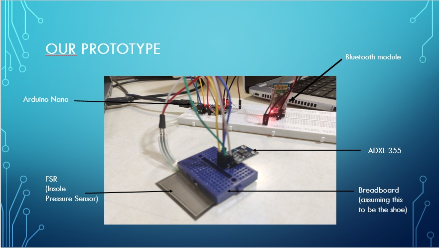
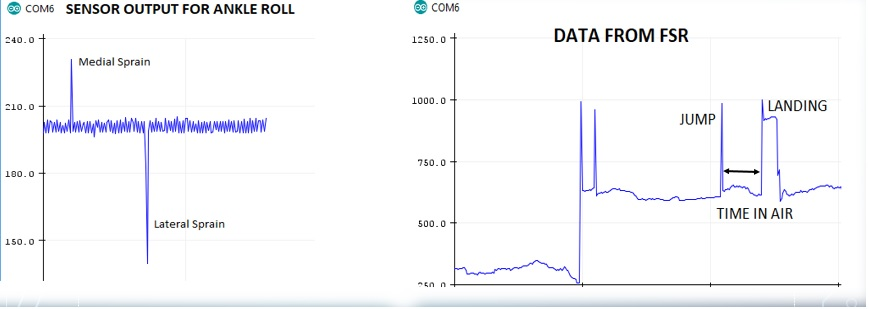

Wearable Device Hackathon 2019(Winners)
Funding:
- Protyping fund:INR 10,000
- Cash Prize: INR 15,000
Our Idea was to Develop a sensor-based shoe to prevent injuries in basketball by analyzing the player's technique during practice sessions and giving feedback on weight distribution and landing angles to prevent major injuries. Our approach to doing so was by having an in-sole FSR(force sensitive resistor) matrix to monitor weight distribution and an accelerometer to measure landing angles.
 We prototyped our idea using an Arduino Nano, Bluetooth module,3-axis accelerometer and force-sensitive resistor sensor. We captured some valuable data with which we could predict the angle at which the ankle was wrt to the ground when the player landed. Further we plan on adding Machine learning algorithms to classify the players form This idea was Also accepted in Smart India Hackathon 2020(Postponed due to Pandemic COVID-19)
DPS Codefest 2017 (Runner-up)
We built a tool that could be used to give ATC(Air traffic control) Commands. This program would emulate commands given by
an Air traffic controller we could modify parameters such as
- Heading
- Altitude
- Speed
We also added a GUI to visualize the location of aircraft along with a display of vital parameters
We also had an alarm system to alert ATC if planes got too close!
This tool was developed on C++